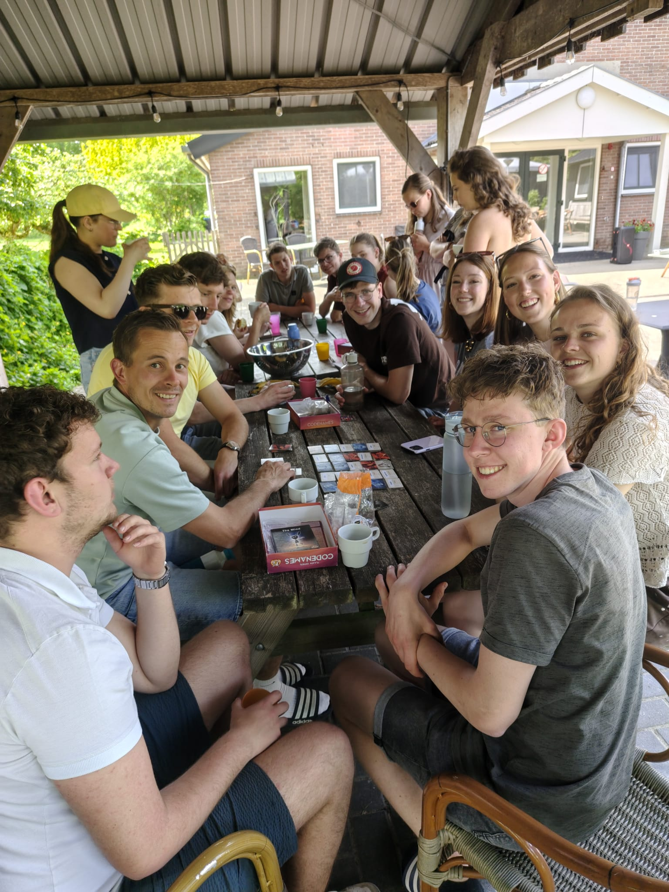
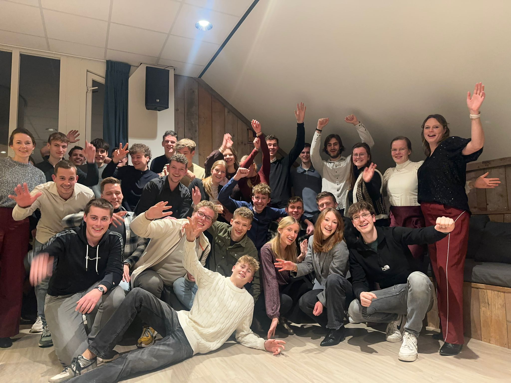
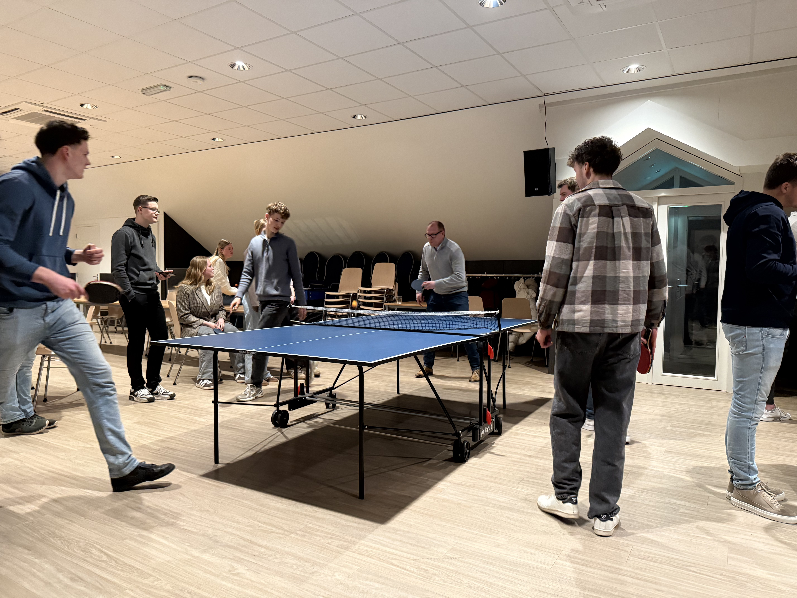
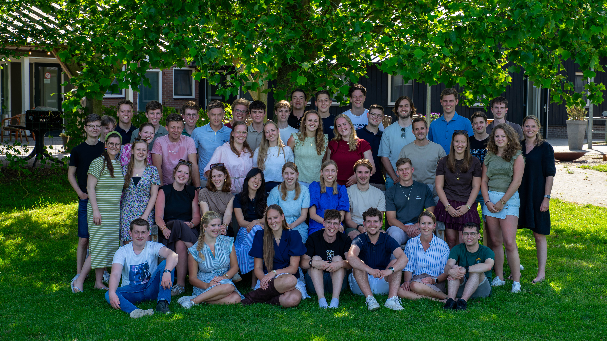
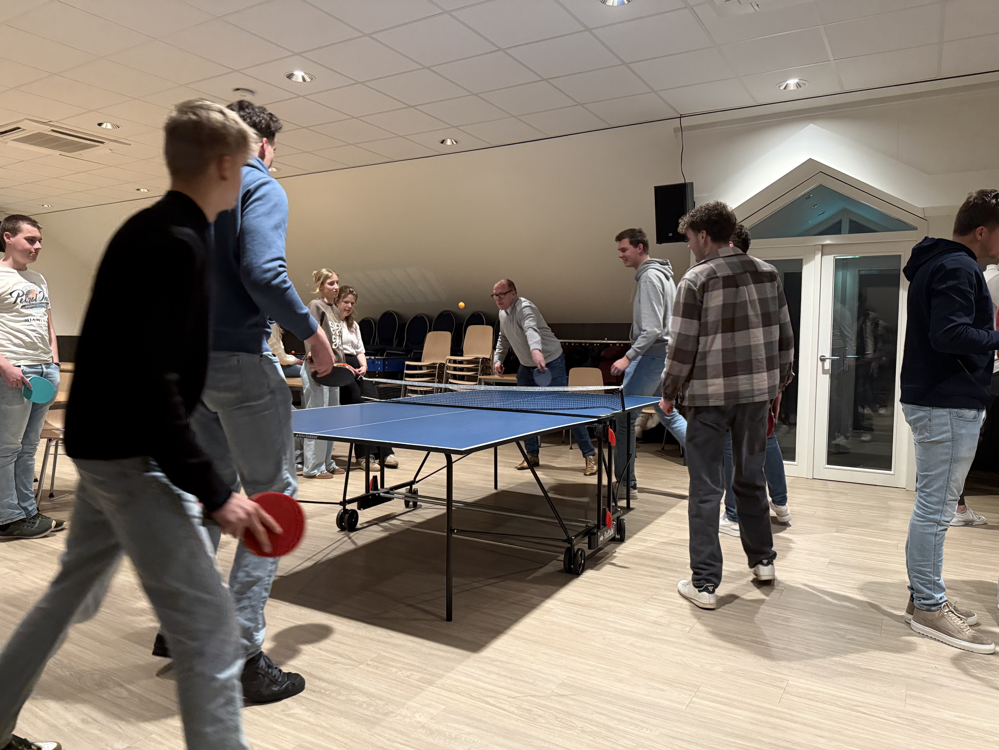

De gemeente van morgen —
gebouwd door jou.
Niet alleen aanwezig zijn —
maar meebouwen aan de gemeente
De Jeugdvereniging is voor jongeren van 16 jaar en ouder. We komen elke donderdagavond (m.u.v. de schoolvakanties) bij elkaar in de bovenzaal van Eben Haezer. We beginnen de avond met God en denken na over een stuk uit de Bijbel en na de pauze is er tijd voor een heleboel gezelligheid. Aan het eind van het seizoen sluiten we af met een geweldig JV-weekend.




